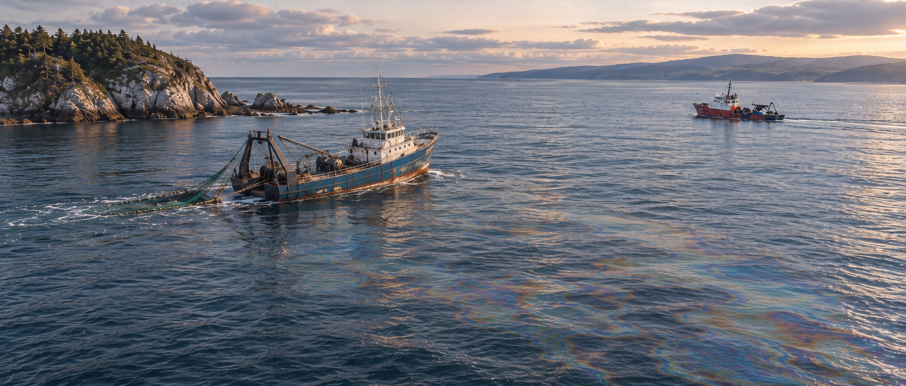

КОР.КЕЙС.02
Морское страхование и судовладельцы · международный трек
>2 млрд. руб. экономии для судовладельцев и операторов · 2025–2029
Метео-бюллетени и контроль страхового покрытия для страховщиков; детекция аномалий флота для судовладельцев. Собственная разработка и внедрение сервиса в семи странах.

- Функции
- Диагностика и бизнес-кейс · Эксплуатация и контроль границ автономии ИИ-агентов
- География и языки
- Россия · Китай · Ближний Восток · Южная Америка · Япония – русский, английский, китайский, испанский
- Данные
- Треки AIS + спутниковые снимки + обезличенные телеком-данные
- Метрика
- ≈22% рейсов под защитой услуги · до $9,7–16,6 млн в год предотвращённых потерь (оценка)
Задача
Страховым компаниям нужен контроль рисков и страхового покрытия флота; промысловым судовладельцам – контроль флота и предотвращение незаконного вылова.
Результат
У заказчиков – работающий коммерческий модуль в эксплуатации; для китайского судовладельца выявлен скрытый перегруз вылова отдельными судами в проливе Лаперуза.
Вердикты по процессам
| Процесс | Решение | Обоснование |
|---|---|---|
| Метео- и ситуационные бюллетени | ИИ | Сборка мульти-источниковых данных, персонализация под судно и рейс |
| Контроль страхового покрытия | Без ИИ | Детерминированные правила и пороги – ошибка недопустима |
| Детекция аномалий флота | Гибрид | Модель размечает рассогласования AIS и фактической активности; вывод – после проверки человеком |
Следующие кейсы

−38% судо-суток на мониторинг акваторий
От сплошного визуального патрулирования к точечному мониторингу с БПЛА: естественные и антропогенные нефтяные разливы.
Разбор кейса →
+18% объёма работ филиалов при сокращении штата
Агент распределяет и приоритизирует работы филиалов в закрытом госконтуре; поверх него – стандарт управления.
Разбор кейса →Начнём с разговора
45 минут: ваш контекст и вопросы. На выходе – понимание, какой объём диагностики вам действительно нужен.